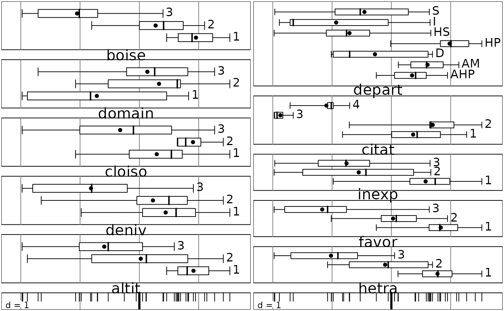

A table of Qualitative Variables
ours.RdThe ours (bears) data frame has 38 rows, areas of the "Inventaire National Forestier", and 10 columns.
Usage
data(ours)Format
This data frame contains the following columns:
altit: importance of the altitudinal area inhabited by bears, a factor with levels:
1less than 50% of the area between 800 and 2000 meters2between 50 and 70%3more than 70%
deniv: importance of the average variation in level by square of 50 km2, a factor with levels:
1less than 700m2between 700 and 900 m3more than 900 m
cloiso: partitioning of the massif, a factor with levels:
1a great valley or a ridge isolates at least a quarter of the massif2less than a quarter of the massif is isolated3the massif has no split
domain: importance of the national forests on contact with the massif, a factor with levels:
1less than 400 km22between 400 and 1000 km23more than 1000 km2
boise: rate of afforestation, a factor with levels:
1less than 30%2between 30 and 50%3more than 50%
hetra: importance of plantations and mixed forests, a factor with levels:
1less than 5%2between 5 and 10%3more than 10% of the massif
favor: importance of favorable forests, plantations, mixed forests, fir plantations, a factor with levels:
1less than 5%2between 5 and 10%3more than 10% of the massif
inexp: importance of unworked forests, a factor with levels:
1less than 4%2between 4 and 8%3more than 8% of the total area
citat: presence of the bear before its disappearance, a factor with levels:
1no quotation since 184021 to 3 quotations before 1900 and none after34 quotations before 1900 and none after4at least 4 quotations before 1900 and at least 1 quotation between 1900 and 1940
depart: district, a factor with levels:
AHPAlpes-de-Haute-ProvenceAMAlpes-MaritimesDDrômeHPHautes-AlpesHSHaute-SavoieIIsèreSSavoie
Source
Erome, G. (1989) L'ours brun dans les Alpes françaises. Historique de sa disparition. Centre Ornithologique Rhône-Alpes, Villeurbanne. 120 p.
Examples
data(ours)
if(adegraphicsLoaded()) {
s1d.boxplot(dudi.acm(ours, scan = FALSE)$l1[, 1], ours)
} else {
boxplot(dudi.acm(ours, scan = FALSE))
}
